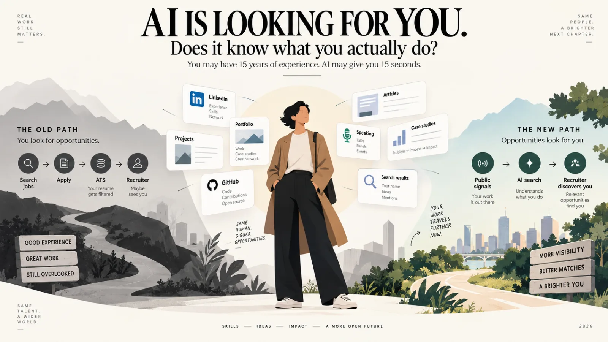

Featured AI · Interactive story
AI Is Looking For You
You may have fifteen years of experience. An AI agent may give it fifteen seconds. Nine interactive scenes on how professional discovery is being rebuilt around machines that read — and what a career has to say about itself to be found.
![The article’s opening illustration: “AI is looking for you — does it know what you actually do?” On the left, THE OLD PATH in grey (search jobs, apply, ATS, recruiter) over signposts reading good experience, great work, still overlooked. On the right, THE NEW PATH in colour (public signals, AI search, recruiter discovers you) over signposts reading more visibility, better matches, a brighter you. A person stands between them, surrounded by cards for LinkedIn, portfolio, GitHub, articles, speaking and search results.](images/articles/ai-is-looking-for-you/hero-old-path-new-path.webp)